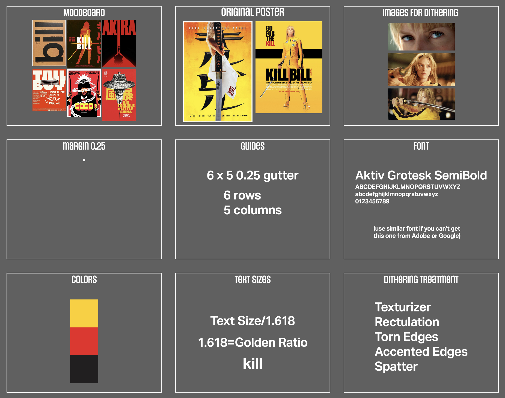

These web pages were created for UNLV GRC 420 Design & Media Studio III class. Click on the thumbnail to go to the respective web page.
Explains how to rent a internet domain, or URL, for as little as 99¢ per year, and point it toward your web site.Explains how to use the programmers' web site Github as a free web server.Explains how to use Google Analytics to track the number of users who looked at your site.Sample presentation proposal for use in planning with instructor.Interactive web page that allows users to drag-and-drop icons to create a color-managed workflow.Web page that allows users to write out how to implement the “4 Cs” of color management for main devices in a print workflow.Sample portfolio that uses the flexible box layout to facilitate adding entries. Items are depicted as linked thumbnail images and captions grouped with the figure tag.Brief guide to creating ePub eBook files in InDesign.Guide to InDesign’s long document features, including the Book palette, Library, Table of Contents, and others.Demonstration of how web browsers can read embedded ICC color management profiles in images.A 5:10-min. YouTube video by Mary-Anne Buerano (TMU GCM ’21) on how to edit video in Apple iMovie and Adobe Premiere.A series of 4 handouts detailing the 4 Cs for cameras, monitors, proofers, and presses. (Click the links to go to the page for each equipment type).Tips on job searching, resume writing, and interviewing.Quick-reference guide to creating interactive app and web site mockups in Figma.Brief descriptions of lithography, flexography, gravure, and digital printing.How to create a web portal app for the iPhone that goes to your portfolio site.Sample interactive PDF from InDesign. Note buttons for next and previous pages, table of contents, and interactive contents.Description of common substrates used in package design and printing.Comparison of web page widths at 768, 928, 1024, and 1228px.Named colors from light to dark according to neutral density (average of RGB values) and CIE L*.Exercise on programming with the jQuery JavaScript library, used by 70% of the Top 100 Web Sites.A walk-thru on JavaScript variables and functions for programming interactivity in web pages.How to create special design effects, including outline letters, tables with picture backgrounds, and drop-caps with backgrounds (similar to illuminated manuscripts).Examples of animation in CSS (3 balloons, left) and Tumult Hype (banner).Quick-reference guide to responsive design for fixed-width pages and the grid layout.Pacdora is a paid site for mocking up packages in 3D. Users can select from a multitude of templates, add artwork, and export their designs to user-controllable 3D models.Suggestions for job search materials and lists of potential questions from interviewers and questions for the company.Instructions for Nik’s demo on creating an animated logo in Adobe After Effects.

The starting document for Daniel’s “Make a Poster” demo is too large to post on Github but is downloadalbe from Canvas > GRC 420 > Discussions. Use the fonts, colors, and settings in the boxes at left to design a 12×18 poster in the blank frame on the right.